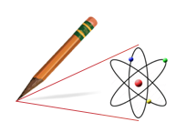
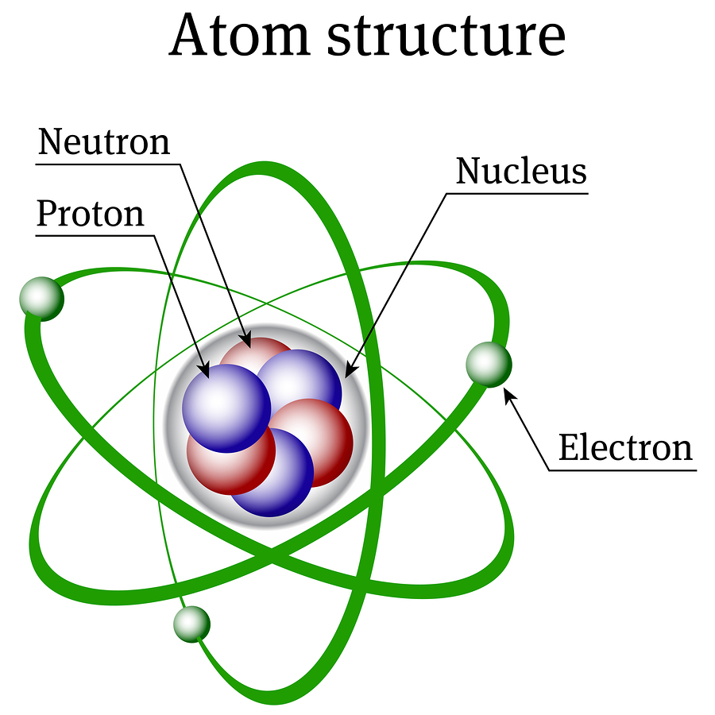
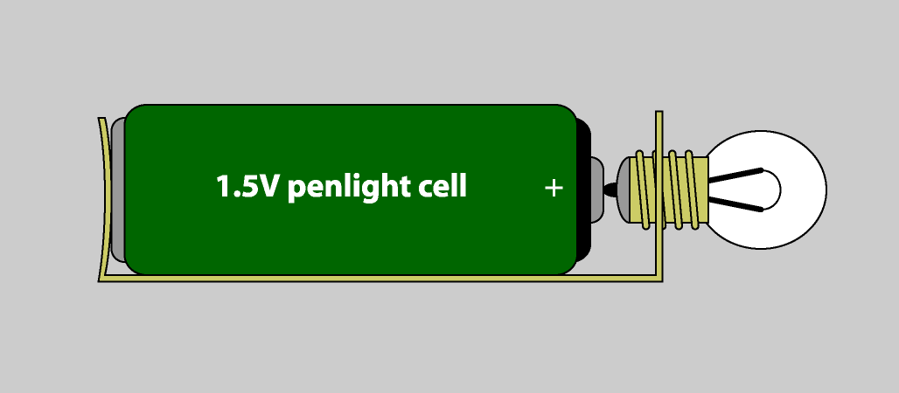
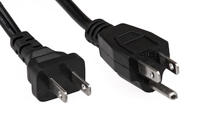
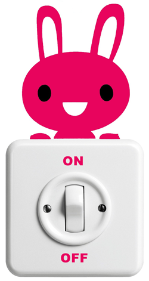

What You Should Know
 What Is Electricity?
What Is Electricity?
Electricity powers many devices we use every day. Examples are lights, motors, cell phones, and computers. If it has a plug or a battery, it uses electricity. Look around the room. How many things can you find that run on electricity?
Electricity Is Moving Electrons
Everything in the universe is made of tiny particles called atoms. Atoms are too small to see—even with a normal microscope. How small are they?
Try this: Use a pencil to make a single dot on a piece of paper. Can you guess how many atoms are in that dot?
Did you guess over 4,000,000,000,000,000,000 atoms? It is true. Pencil lead is made from graphite, which is a type of carbon, so your dot has over 4 billion billon carbon atoms.
Electrons move around the outside of the atom like the moon orbits around the Earth. Protons and neutrons cluster in the middle part of the atom. This is called the nucleus. In some materials, like in some electrical wires, electrons can easily separate from the rest of the atom.
Each electron has a small negative (-) electrical charge. Electrons are attracted to positive (+) charges, like protons. Think of the old saying, "opposites attract." Electrons in a wire leave their atoms and are "pulled" towards the positive end of the wire.
Electrons can also "push" each other around. They do not want to be near one another. They want to be near their opposites (protons). Electrons are "pulled" to the positive end of the wire, but they also "push" each other in that same direction. They are trying to find the positive charge. This flow of electrons is called an electric current. This steady flow is the source of energy that is electricity.
Imagine a group of people trying to find seats in a movie theater. They walk through the aisle in search of empty seats. The people are like the electrons and the seats are like the protons. The people are drawn to the seats because they know that is where they belong. Plus, they feel the pressure from the people behind them to keep moving towards the seats so that everyone can find their place.
Voltage is like the "push" or the "pressure." The pressure of the pushing on the electrons of a wire becomes the energy that powers our devices.

What Is a Circuit?
Electrons need to move around a continuous (unbroken) path to create electricity. This path is called a circuit. The wires and power cords for our devices are the paths for the electrons.
In a way, electricity is like the water that flows down a river and the circuit is the riverbed.
We can design these circuits in many different ways to control electricity for specific jobs. These jobs can be as simple as turning a light bulb on and off, or as complex as controlling the flight of a rocket.
Why Do Cords Have Two Prongs?
Now think about electrical power cords. Why do you think they have two prongs? (Prongs are the metal parts that stick out of the end of the cord.)
Each prong is connected to a wire; one for the electrical current to flow from the wall outlet to the device (like a light) and another to carry the current back to the wall (completing the circuit and making it a continuous path). Plastic or rubber covers the wires to keep us safe from electrical shock. (Electricity does not travel well through these materials.)
All Circuits Work in the Same Way

All circuits work in the same basic way. Electricity flows from a power source along a path to a load, and then back in a loop.
All circuits have these three parts:
- Power source
- Load (resistor)
- Wiring path
A load is also called a resistor because it creates resistance between the two ends of the power supply. The resistor needs electricity to work, and as it does, it reduces the current flow. In this example, the load/resistor is a light. As the bulb uses some of the electricity to light up, it reduces the current.
Do you notice the arrows that show the direction of the electrical current in the example? The direction is important because some electrical parts work differently—or not at all—depending on which way the current flows. The “+ and “-” sides of a power source, like the battery shown here, are called poles.
Although the electrons physically move from the negative (-) pole to the positive (+) pole, we usually show current arrows as going from the "+" to "-" pole. (Research "Benjamin Franklin and electric current" for the detailed history).
How Does a Light Switch Work?
How do we turn a light on and off?
Remember that we need a continuous path for electrons to move and create electricity. If we want to control when the light goes on and off, all we have to do is add something to our circuit that can "break" and reconnect the circuit loop.
Almost all circuits also have some type of switch that can do just that.
When the switch is “on," it connects the wires to make a continuous path. The current can move through the circuit to power the light.
When the switch is “off," the circuit path is broken. The current stops flowing and the light turns off.
Understanding the AC Adapter
Not all electric currents are the same. Watch this video if you need help understanding how to use the AC adapter in your Snap Circuits kit to correctly power your circuits from the wall outlet.